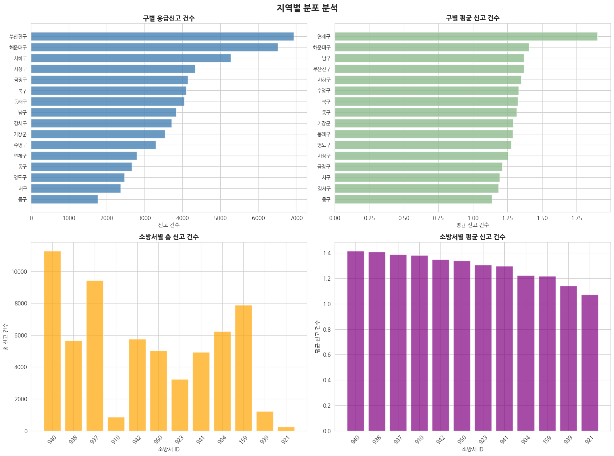
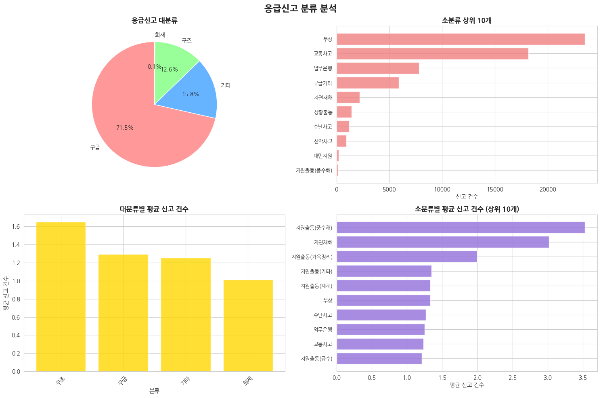
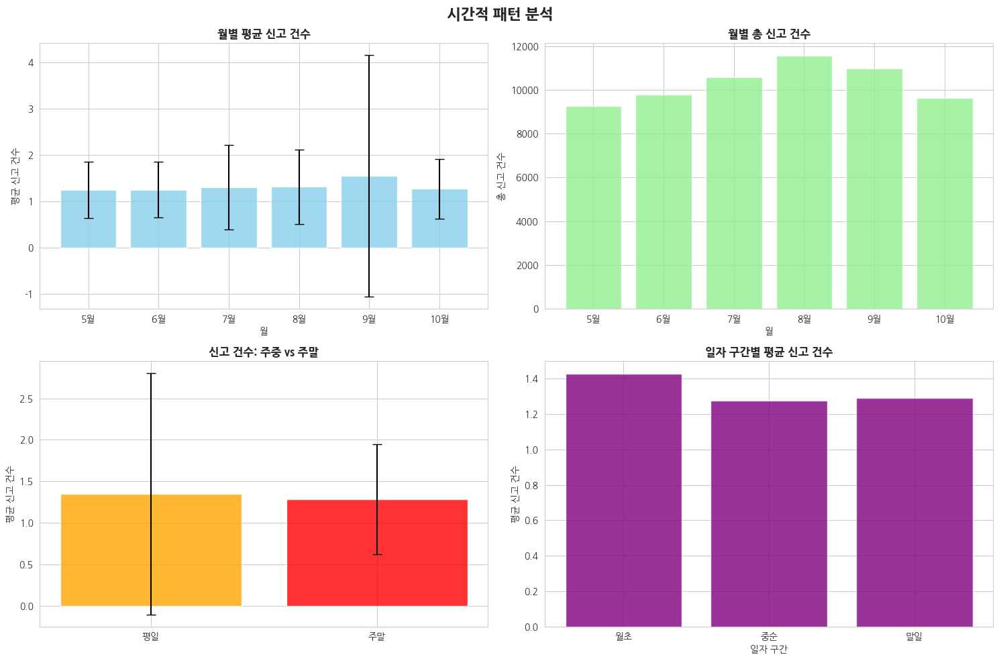
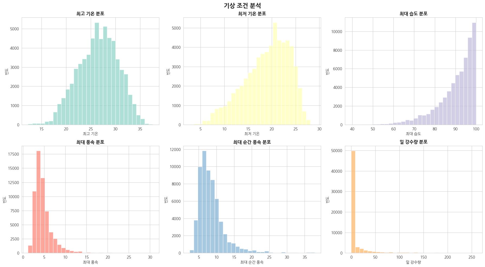
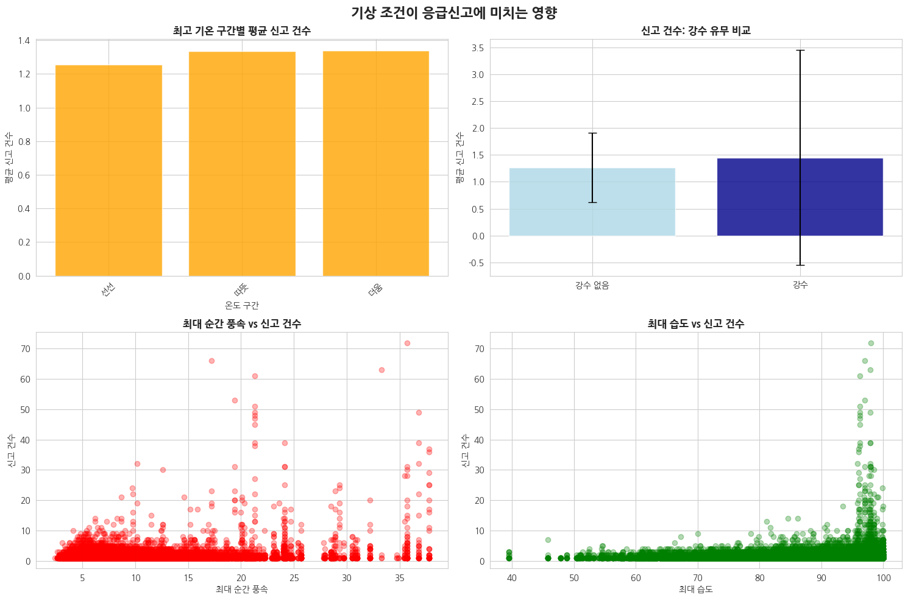
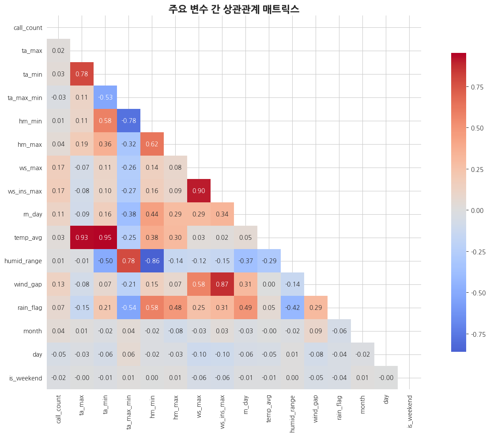
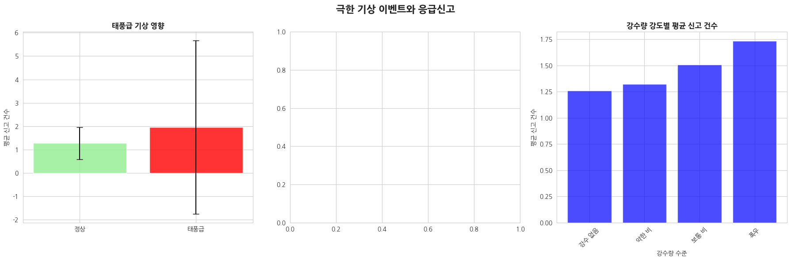

1. 데이터 개요 및 기본 통계
1.1 데이터셋 구성
본 연구에서는 119 응급신고 건수 예측을 위해 4개의 CSV 파일을 활용하였다. 훈련 데이터는 call119_train.csv(42,924행)와 cat119_train.csv(61,771행)로 구성되며, 테스트 데이터는 test_call119.csv(9,601행)와 test_cat119.csv(12,739행)로 구성된다.
1.2 데이터 수집 기간 및 범위
훈련 데이터는 2020년 5월 1일부터 2023년 10월 31일까지 총 736일간의 부산광역시 119 응급신고 데이터를 포함하며, 테스트 데이터는 2024년 5월 1일부터 10월 31일까지 184일간의 데이터로 구성되었다. 모든 데이터는 부산광역시 16개 구에서 발생한 응급신고를 대상으로 하며, 136개의 세부 주소 지역과 12개 소방서에서 관할하는 지역을 포함한다.
1.3 타겟 변수 특성
응급신고 건수(call_count)의 분포는 강한 우편향을 보이며, 평균 1.33건, 표준편차 1.29건으로 나타났다. 최빈값과 중앙값이 모두 1건으로, 대부분의 경우에서 일일 응급신고 건수가 1건임을 의미한다. 최대값은 72건으로 극단적인 이상치가 존재하며, IQR 기준으로 전체 데이터의 20.86%(12,885건)가 이상값으로 분류되었다.
1.4 응급신고 분류별 분포
응급신고는 4개 대분류로 구분되며, 구급(71.5%, 44,141건)이 가장 높은 비중을 차지하고, 기타(15.8%, 9,741건), 구조(12.6%, 7,811건), 화재(0.1%, 78건) 순으로 나타났다. 소분류는 23개 유형으로 세분화되며, 부상(38.1%, 23,541건)과 교통사고(29.4%, 18,184건)가 전체의 67.5%를 차지하여 의료응급상황이 주를 이룬다.
1.5 지역별 분포 특성
부산광역시 16개 구 중 부산진구(11.2%, 6,936건)가 가장 높은 응급신고 발생률을 보였으며, 해운대구(10.6%, 6,515건), 사하구(8.5%, 5,271건)가 뒤를 이었다. 이는 인구밀도, 상업지역 분포, 교통량 등 지역적 특성이 응급신고 발생에 영향을 미치는 것으로 해석된다.
1.6 기상 데이터 특성
기상 데이터는 결측값 없이 완전한 형태로 제공되었다. 최고기온 평균 26.5°C(표준편차 4.0°C), 최저기온 평균 18.9°C(표준편차 4.7°C)로 온화한 기후 특성을 보였다. 일강수량은 평균 10.0mm이나 표준편차가 27.8mm로 매우 높아 강수량의 변동성이 큰 것으로 나타났다. 최대 순간풍속 평균은 8.6m/s이며, 최대 37.8m/s까지 기록되어 태풍 등 극한 기상 현상도 포함되었다.
1.7 시간적 패턴 분석
월별 분석 결과, 9월(평균 1.55건)에 응급신고가 가장 많이 발생하며 표준편차(2.61)도 가장 높아 변동성이 큰 것으로 나타났다. 이는 태풍시즌과 일치하는 패턴을 보인다. 주말(평균 1.28건)보다 평일(평균 1.35건)에 응급신고가 다소 많이 발생하는 경향을 보였다.
1.8 데이터 시각화 분석
본 연구에서는 8개의 주요 시각화를 통해 데이터의 특성을 종합적으로 분석하였다:
그림 1. 타겟 변수 분포 분석
응급신고 건수의 히스토그램, 박스플롯, 로그 스케일 분포, 상위 빈도값을 통해 데이터의 편향성과 이상치 패턴을 확인

그림 2. 지역별 분포 분석
구별 총 응급신고 건수와 평균 건수, 소방서별 분포를 통해 지역적 특성과 업무량 편차를 시각화

그림 3. 응급신고 분류 분석
대분류 파이차트와 소분류 상위 10개, 분류별 평균 응급신고 건수를 통해 응급상황 유형별 특성 파악

그림 4. 시간적 패턴 분석
월별, 주말/평일별, 일자 구간별 응급신고 패턴을 통해 시간적 주기성과 계절성 확인

그림 5. 기상 변수 분포
6개 주요 기상 변수(최고/최저기온, 최대습도, 최대풍속, 순간최대풍속, 일강수량)의 분포 특성

그림 6. 기상 영향 분석
온도 구간별, 강수 유무별 응급신고 패턴과 풍속-습도와 응급신고 간의 산점도 관계

그림 7. 변수 간 상관관계
주요 16개 변수 간의 피어슨 상관계수 히트맵을 통한 변수 간 선형 관계 파악

그림 8. 극한 기상 영향
태풍급 기상일과 평상시 비교, 극한 날씨 분포, 강수량 강도별 응급신고 패턴 분석
